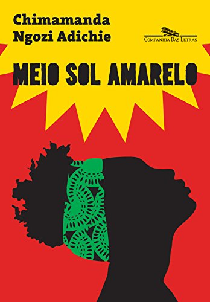

História
 Em meio à guerra fratricida que dividiu a Nigéria com a malograda tentativa de fundação do estado independente de Biafra, um grupo de pessoas busca provar a si mesmas e ao mundo que é capaz não só de sobreviver, mas também de resguardar seus sonhos e sua integridade moral.
Garoto de aldeia, Ugwu procura se ajustar a uma realidade em rápida transformação. Olanna é uma moça da alta sociedade que se torna professora universitária e vive com Odenigbo, que abraça a causa revolucionária. Jornalista com ambição de se tornar escritor, Richard se apaixona pela irmã de Olanna, Kainene, figura esquiva, que reage com pragmatismo ao desmoronamento da nação.
Baseado em fatos reais transcorridos na década de 1960, este romance da premiada escritora nigeriana Chimamanda Ngozi Adichie vai além do mero relato, transformando- se em um grandioso painel sobre indivíduos vivendo em tempos de exceção, um livro que a crítica internacional aproxima de V. S. Naipaul, Chinua Achebe e Nadine Gordimer.
Chimamanda Ngozi Adichie
Chimamanda Ngozi Adichie nasceu em Enugu, na Nigéria, em 1977. Escreveu seus primeiros contos quando tinha 7 anos. Aos 26 publicou seu primeiro romance, Hibisco Roxo, que, como o segundo, Meio Sol Amarelo, tem como palco sua Nigéria natal. Por ambos a escritora recebeu reconhecimento internacional e múltiplos prêmios, mas foi por Americanah que ela recebeu o mais prestigioso — o National Book Critics Circle Award, em 2013 (a Companhia das Letras publicou os três no Brasil).
Adichie cresceu num campus nigeriano. Seu pai era professor, e sua mãe, secretária de admissões. Aos 19 anos tomou o rumo dos Estados Unidos para continuar seus estudos universitários na Filadélfia. Dessa experiência surgiria Americanah, que se passa nos dois países — o natal e o de adoção — pelos quais hoje divide sua vida: passa algumas temporadas em Lagos; outras, em Colúmbia (Maryland). Seu terceiro romance marcou um ponto de inflexão em sua escrita. Nele tomou a liberdade de romper com os limites do gênero, falar da raça, do racismo e da migração nos Estados Unidos, dos problemas da identidade num contexto de desenraizamento.
Livros
Vamos conversar?
Se você como eu, é apaixonadx por literatura,
entre em contato
para marcarmos um web-happy hour e conversarmos : )